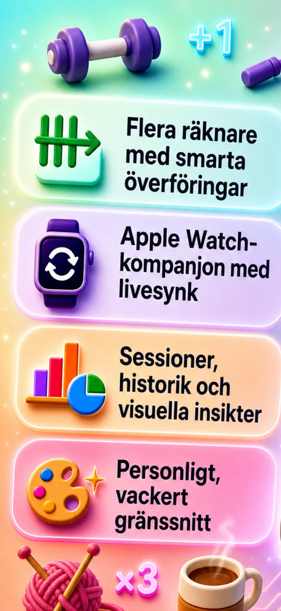
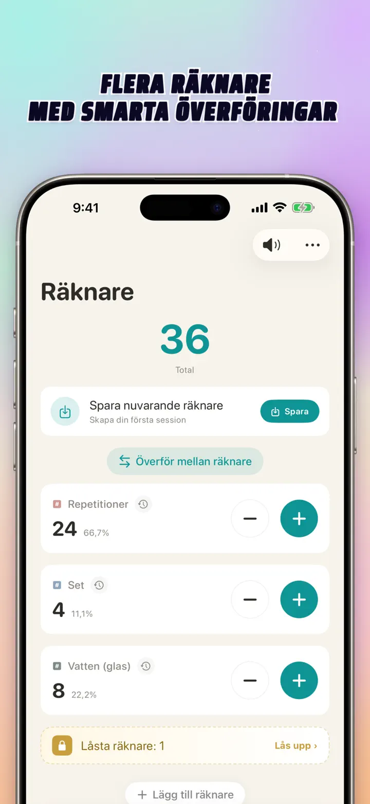
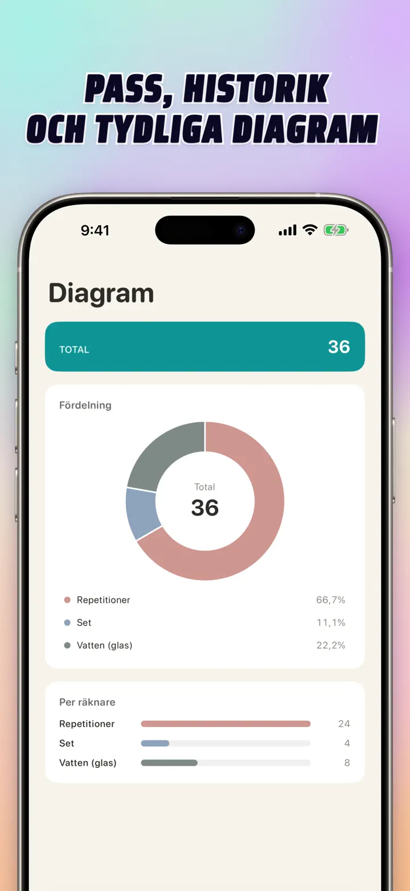
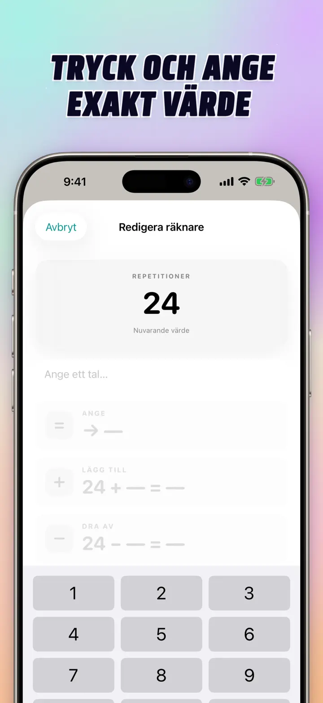
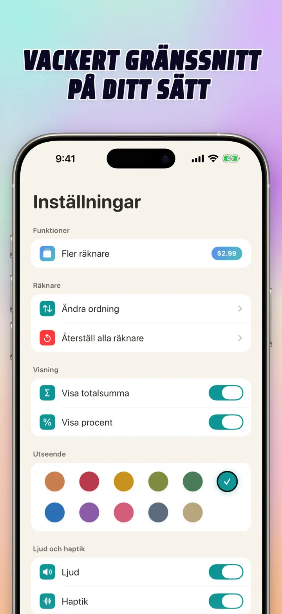
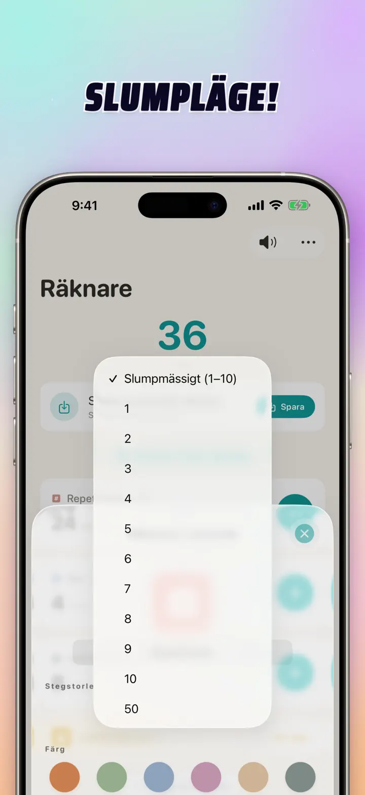

Räknare 123
Watch-sync, klick, poäng
Nytt: widgetar på hemskärmen — tryck på +/- på widgeten utan att öppna appen. Räknare och klicker med Apple Watch-sync, slumpmässigt läge, diagram och historik.
Hämta i App Store
Om appen
Räknare 123 är den snabba, flexibla räknaren för iPhone, iPad och Apple Watch. Namnge varje räknare, välj en färg och räkna vad som helst — set på gymmet, varv i stickning, rosenkrans, poäng i klassen, inventering, matchpoäng. Allt stannar lokalt på enheten, fungerar offline.
ANPASSADE RÄKNARE
- Skapa separata räknare för aktiviteter, spel, rutiner eller listor
- Eget namn och färg per räknare
- Dra för att sortera om
- Håll nedtryckt för snabb räkning
- Helt offline — inget konto, inget moln
DIREKTINMATNING & BULKÅTGÄRDER
- Tryck på en räknare för att sätta ett startvärde direkt — utan att nollställa först
- Bulk-+/-: ändra en räknare med valfritt nummer med ett tryck
- Överföring: flytta ett värde från en räknare till en annan utan dubbelt räknande
- Eget steg: ett tryck lägger till 1, 5, 10, 100 eller vad du vill
- Direktvy av varje ändring
SLUMPMÄSSIGT LÄGE
- Låt en räknare rulla ett nytt värde från 1 till 10 vid varje tryck
- Lägg till eller dra ifrån slumpvärden med + och -
- Praktiskt för övningar, spel, belöningar, klassaktiviteter och rutiner
- Varje slumptryck sparas i räknarens historik
SUMMOR & DIAGRAM
- Totalsumma för alla räknare på en gång
- Procentvy: hur mycket varje räknare bidrar till helheten
- Interaktivt stapeldiagram — växla mellan värde (#) och procent (%)
- Sortera efter värde för en direkt ranking
HISTORIK & DELNING
- Fullständig historik: varje ökning, minskning och redigering loggas
- Spara uppsättningar av räknare och ladda dem direkt
- Dela konfigurationer med laget, elever eller vänner
- Visa historik som datumlogg, grupperade pass eller statistik per dag/vecka/månad
LIVE-SYNC MED APPLE WATCH
- Uppdatera en räknare på iPhone eller Apple Watch, så hålls båda synkade
- Riktig native watchOS-app — ingen enkel följeslagare
- Namn, färger och värden synkade på handleden
- Tryck för att räkna, håll för repetition — direkt från klockan
- Fungerar självständigt när telefonen är utom räckhåll
FÖR iPhone, iPad & APPLE WATCH
- Responsiva layouter för alla skärmstorlekar
- iPad visar fler räknare samtidigt, stödjer Split View
- Integritet först: lokal lagring, inget moln, inget konto
PERFEKT FÖR
- Set och reps på gymmet
- Varv i stickning och maskor i virkning
- Rosenkrans, tasbih, bönepärlor
- Poäng i klassen och närvaro
- Handboll, innebandy, fotboll — snabb poängräkning
- Bordtennis
- Inventering och lagerräkning
- Sällskapsspel, kort, bridge, canasta
- Bassäng- och löparvarv
- Fågelskådning
- Räkna besökare vid evenemang
- Följ vanor och mål
Ladda ner Räknare 123 och gör varje räkning enkel — tydlig, snabb, privat.
Integritetspolicy: https://masawata.net/privacy-policy.html Användarvillkor: https://www.apple.com/legal/internet-services/itunes/dev/stdeula/
Skärmavbilder





Räknare 123
Nytt: widgetar på hemskärmen — tryck på +/- på widgeten utan att öppna appen. Räknare och klicker med Apple Watch-sync, slumpmässigt läge, diagram och historik.
Hämta i App Store